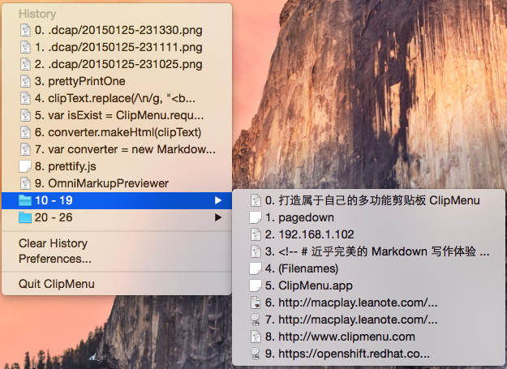
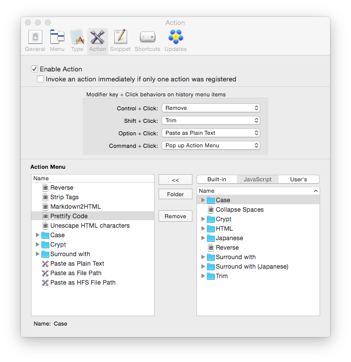
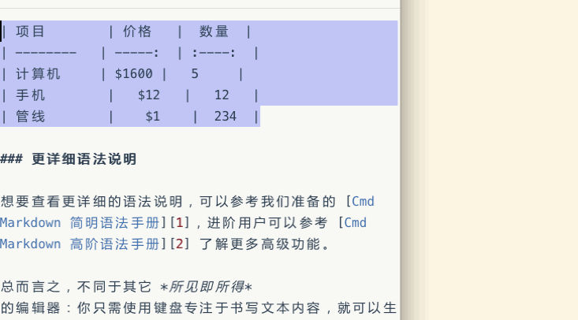

打造属于自己的多功能剪贴板 ClipMenu
ClipMenu 初见
多功能剪贴板 ClipMenu 初见印象并不深刻，笔者现在甚至只能隐约记得大约是在半年前安装到系统里的。安装的原因基本上是以前习惯所致，总觉得弄个增强剪贴板才心安。到网络搜索到 ClipMenu 体积小巧而且免费，就果断安装。然而安装后的半年多时间里，打开 ClipMenu 的次数屈指可数，很大一部分原因是没有那么多东西要复制粘贴，当然也有 ClipMenu 自身的原因：每次粘贴都要打开二级菜单实在太麻烦 …… 但是经历那么多次软件“清洗”，ClipMenu 一直稳当当地端坐在硬盘里没挪地儿。
就这么彼此相安无事，无激情也无冲突。直到几天前开始搞博客主题、Markdown等，复制粘贴任务一下变得异常繁多。赶紧打开 ClipMenu 来用，然后发现原来烦人的二级菜单是可以设置的！又摸索了下其他设置，发现功能呢其实蛮强大的。到 官网 查看，发现作者在用 Swift 语言开发下一版本。对其好感剧增，于是边用边折腾，现在已经设置为开机启动项。
ClipMenu 贴心设置

ClipMenu 默认快捷键为 ⌘ + ⇧ + V, 是由日本人开发的，目前软件包不含中文语言。但还好设置界面比较简单，我们此处只关注比较重要的选项。

选项卡 Menu
选项卡 Menu 第一项就提供了设置一级菜单条目数的选项，建议为 10。如果你是轻度使用者，根本不计划启用二级菜单则该值适当大一些。
Number of items place inside a folder - 各个二级菜单里的条目数，设置时建议参考 General 选项卡下 Max clipboard history size.
Number of characters in the menu - 各个条目的字符串长度。可以适当设置长一些，以免总是把鼠标移上去等待 tooltip 出现。
Show Image - ClipMenu 还可以 handle 图像、PDF等剪贴板历史纪录，并支持右键菜单显示图像。确认用不到的话可以关闭。
选项卡 Snippet
某些不常变动的文本项如快递地址、常用短语等可设置为 Snippet, 方便快速填充。可以设置分组，快速导入/导出。默认 Snippet 显示在剪贴板下方，会导致界面不太简洁， 将The position to show snippets in ClipMenu 设置为 None 就可以隐藏掉。单独调出 Snippet 的快捷键为 ⌘ + ⇧ + B.
其它选项
ClipMenu 还有一些其它贴心设置，比如剪贴板排序方式、排除例外的应用、隐藏 Menu Bar 图标、tooltip 字符串长度等等。这些选项可能不值一提，但对于需要它们的用户来说，同样构成了用户体验极其重要的一部分。
ClipMenu 增强扩展

此章节主要是针对 Action 选项卡的设置。之所以把它单独拎出来放到最后来讲，是因为 Action 涉及的东西稍显繁杂，但是可扩展性也更强。所谓的 "Action" 是这样的：一般的剪贴板软件点击某条目后就直接粘贴出去了，但是 ClipMenu 的 Action 特性可以让你在点击后将条目进一步处理后再粘贴。该特性非常快捷实用，也由此带来了很多折腾的乐趣。比如你可以快速将从网页上复制的内容去除掉格式并粘贴，根据需要大小写互转后再粘贴，将文本用不方便输入的字符包裹后再粘贴，就像这样：『资治通鉴』，将剪贴板内容反转后再粘贴：猪是的念来过倒，将文件直接粘贴为文件路径，将 Markdown 文本转换为 HTML 等等 ……
类似的玩法还有许多，而且你可以使用 javascript 进行自定义扩展。软件作者在这里 1 提供了简单的说明，阅读完并参照内置脚本就可以快速写出自己的扩展啦。写完后放到 /Users/ashfinal/Library/Application Support/ClipMenu/script 目录下，User's 选项卡下就会出现你刚命名的脚本，点击 << 按钮添加到 Action Menu菜单里就可以调用啦。
关于 javascript 语言的学习，可以到 w3school 进行初步了解。因笔者非专业编程人员，就不在此献丑了。期待有大神分享出好用的脚本来吧～
不过话说笔者最近比较着迷于 Markdown 格式，也小小尝试了下软件内置的 Convert Markdown to HTML 脚本，发现效果不甚理想。于是自己动手照猫画虎搞了个增强版的转换脚本，就是上图所示中的 Markdown2HTML 啦。除了 MathJax 外，其它如 footnote、strikethrough、attr_list 等统统支持，感觉还是蛮好用的哈～

对 ClipMenu 期待的改进
目前最新的 ClipMenu alpha 版正在内测 2 ，作者使用 Swift 语言完全重写，针对 Yosemite 进行适配并增加了一些新的特性，该版本将会上线 App Store 可能会改为收费模式。感兴趣的读者可以抢先在此 下载 新版体验。有什么意见建议可以给作者提出，说不定就采纳了呢～
说下笔者觉得 ClipMenu 可以改进的地方：
-
缺乏内容管理页面
现在你只能要么删除单条记录，要么清空所有记录。管理几十条剪贴板历史麻烦的很，亟需内容管理页面。在此页面你可以进行拖动排序、固顶，批量删除、添加，搜索并粘贴等等操作。
如前图所见，笔者目前将
control + click设置为移除当前条目，以减轻剪贴板历史管理的负担。 -
搜索粘贴功能
当你剪贴板历史较长时，在那么多项里面挨个找出想要粘贴的条目，就变的有点繁琐恼人。但是在弹出的菜单里加入搜索输入框？个人觉得界面冗余没那么好看了，也许可以直接输入文字实时过滤匹配项？
-
更好用的 Snippet 功能
Snippet 是 ClipMenu 的特性之一，但目前功能偏弱，管理页面添加/删除 Snippet 比较麻烦，不直观。希望能改进下界面流程，而且如果 Snippet 能增加变量支持，比如插入当前日期时间、字数统计、字符串切片等等，那就有更灵活的用途。
貌似目前的
Action特性就能实现变量的部分功能，有空研究一下～ -
更多的内置 Action 及社区分享
学习 javascript 并编写扩展，对于大多数人来说还是困难重重。希望 ClipMenu 改为收费版后能运营社区，方便快速分享 Action 。或者至少能给出更详细的帮助文档和编写范例。
-
iPhone客户端同步及方便的剪贴板共享
个人对移动客户端同步支持需求并不强烈，但料想应该会有部分人需要此功能。另外，用户之间方便快速的剪贴板内容分享也不错。还可以考虑外部应用接口，比如发送链接给 Evernote 啦等等 ……
-
……
结束语
暂时想到的就这么多啦。期待有更多 ClipMenu 使用技巧的分享，期待有更好用的多功能剪贴板软件出现。读者们有什么 Mac OS X 下更好用的软件也请留言讨论～
文章链接：https://macplay.github.io/posts/da-zao-shu-yu-zi-ji-de-duo-gong-neng-jian-tie-ban-clipmenu/
发布/更新于：
版权声明：如无特别说明，本站文章均遵循 CC BY-NC-SA 4.0 协议，转载请注明作者及出处。